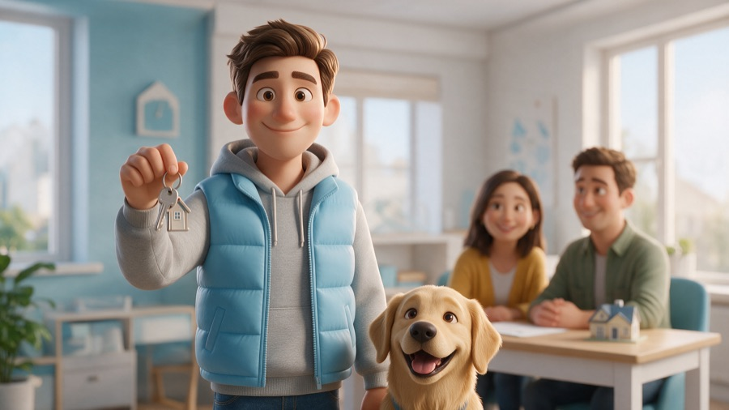
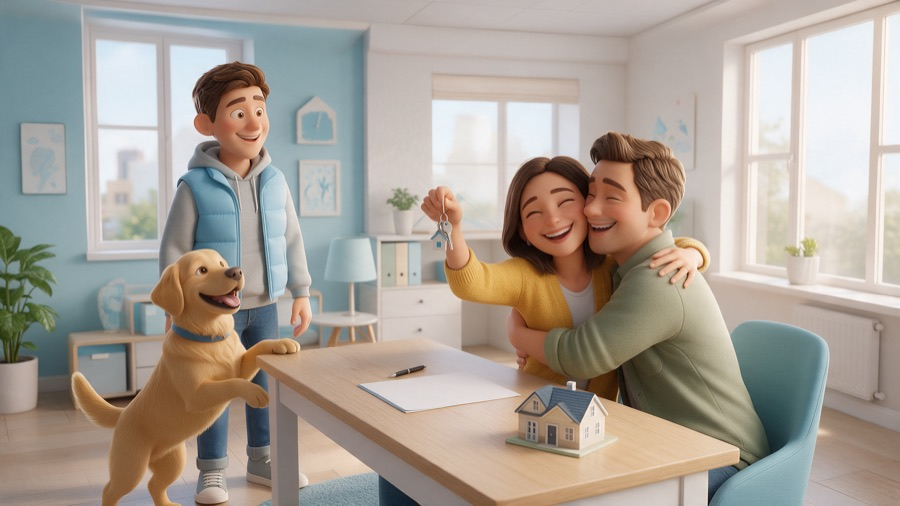

Jak jsme za pár dní udělali celou značku s AI
Název, logo, 3D maskot, celá rodina postav, namluvené video, web s vlastní doménou a hezký náhled při sdílení. Tady je přesně, co jsme použili, v jakém pořadí a na co si dát pozor, abys to zvládl taky.

Obsah
Nástroje, které jsme použili
Všechno řídil jeden AI asistent v terminálu. Ten psal kód, posílal zadání do generátorů obrázků a videa, nahrával soubory na GitHub a kontroloval výsledek. My jsme jen říkali, co se líbí a co ne.
AI asistent v terminálu. Vymýšlel názvy, psal web, generoval obrázky přes MagniFic, stříhal video, nastavoval GitHub a DNS. Všechno se zadává normální češtinou.
Jedna platforma na všechno vizuální: generování obrázků (s referencí pro stejnou postavu), video Kling 2.5, rozmluvení postavy OmniHuman a hlas ElevenLabs v3. Platí se kredity.
Namluvení textu. Umí emoce v hranatých závorkách, třeba [cheerful] nebo [excited]. Použili jsme hlas Tomáš Šimko.
Nástěnka se všemi maskoty a zásadami, aby se dalo s týmem vybírat a komentovat. Starší kola jsou v archivu.
Kód webu je v repozitáři a GitHub ho zdarma zveřejní včetně HTTPS certifikátu. Nová verze je venku zhruba do minuty.
Registrace panspocital.cz a DNS záznamy, které doménu nasměrují na GitHub.
Program na spojení záběrů, kompresi videa pro web a vytažení náhledového snímku. Ovládá ho asistent, ty nemusíš nic.
Asistent si web vyfotí v počítačové i mobilní šířce, podívá se na výsledek a opraví, co nesedí.
Název a doména
Začali jsme stovkami návrhů, ale nejvíc pomohlo zastavit se a nejdřív si ujasnit zadání. Asistent nastudoval, jak se značky pojmenovávají, a položil pár otázek:
- Tón: přátelský, chytrý, s trochou humoru.
- Slib: jasno a férovost, rychlost a pohodlí, jistota a klid, úspora peněz.
- Trh: jen Česko, takže jméno může být česky a s vtipem.
Každý favorit pak prošel kontrolou: je doména .cz volná? Neexistuje už firma se stejným nebo podobným jménem? (Tak vypadl třeba „Finvo“, protože ve světě už je.) Vyhrálo Pan Spočítal. Je to česky, zapamatovatelné, vtipné a rovnou se z toho dá udělat postava.
Logo, barvy a písmo
Logo je přímo náš maskot: Pan Spočítal tváří v tvář se svým labradorem v kulatém výřezu, vedle něj nápis „Pan Spočítal“. Na logo jsme si nechali vygenerovat samostatný detail hlav na čistém světle modrém pozadí, protože celá postava je v malé velikosti nečitelná. Stejný obrázek slouží i jako ikona v záložce prohlížeče a na ploše telefonu.
Původně bylo logo zelená kulatá postavička. Jakmile jsme ale měli maskota, logo jsme sjednotili s ním a celou paletu převedli ze zelené do modré podle jeho vesty.
#12355B
#1F7EC2
#4FB3E8
#8FD0F2
#CFE9FB
#F4F8FB
#1F7EC2, protože světle modré písmo na světlém pozadí by nebylo čitelné.Písmo: Bricolage Grotesque z Google Fonts, zdarma. Nadpisy jsou tučné (800) a se staženými mezerami mezi písmeny, proto působí moderně.
Proč světle modrá u postav: modrá u financí budí důvěru. Necháváme ji ale jen jako akcent (vesta, dveře, tričko), aby to nepůsobilo jako banka.
Maskot: tři kola hledání
Nejdůležitější lekce celého projektu: první nápad skoro nikdy není ten finální. A říct „tohle ne“ je stejně cenné jako „tohle ano“.
Kolo 1: zelená kulatá postavička
Šest variant (pán v buřince, počítadlo, kalkulačka, sova, prasátko). Roztomilé, ale moc dětské a málo lidské pro něco tak vážného, jako je hypotéka.
Kolo 2: pět postav × pět stylů
Ruční kresba, plastelína, nálepka, plochý vektor a 3D. Díky tomu bylo hned vidět, co nechceme: všechno kromě 3D vypadalo levně. Ponechali jsme jen 3D animovaný styl.
Kolo 3: padesát 3D postav podle vzoru
Jako vzor nám posloužil maskot z webu frenkee.cz: mladý člověk s přirozenými proporcemi a v normálním oblečení, ne kulatá figurka. Asistent pak vytvořil 50 různých lidí a zvířátek ve stejném stylu a my vybrali č. 31, kluka s labradorem.

Rodina postav, které k sobě sedí
Největší potíž generátorů obrázků: každý obrázek nakreslí trochu jinou postavu. Trik spočívá v tom, že pokaždé přiložíš referenční obrázek.
- Vezmeš hotového maskota (kluk s labradorem) jako referenci.
- Necháš vygenerovat společnou fotku celé rodiny a popíšeš každého člena (vlasy, oblečení, věk).
- Z nejlepší společné fotky uděláš novou referenci a necháš z ní vygenerovat samostatný portrét každého člena, vždy s jinou rekvizitou (prasátko, kalkulačka, čaj, noviny).
Tímhle postupem vypadají všichni jako jedna rodina: stejný styl, stejné světlo, stejné oblečení.
Namluvené úvodní video
Video má dva záběry, celkem 12 vteřin. Nejdřív obrázky, pak pohyb, nakonec hlas. Nikdy ne všechno najednou.


Postup
- Scéna jako obrázek. Maskot jako reference a k tomu popis kanceláře s mladým párem u stolu.
- Hlas. Text s emocemi namluvený přes ElevenLabs v3: „Ahoj, já jsem Pan Spočítal! Hypotéku ti spočítám i vyřídím… a klíče od nového domova máš v ruce!“
- Záběr 1, mluvení. Obrázek kluka s klíči a hlas poslané do OmniHuman. Ten rozhýbe pusu přesně podle hlasu, takže to nepůsobí jako komentář přes záběr.
- Záběr 2, akce. Kling 2.5 se začátečním i koncovým snímkem: kluk předá klíče, pár se obejme, pes vyskočí.
- Střih. ffmpeg oba záběry spojí, zmenší pro web a vytáhne náhledový obrázek.
advisor hugging anyone.Na webu se video spouští ztlumené (prohlížeče jinak automatické přehrání zablokují) a má tlačítko „Pustit se zvukem“.
Design webu: proč vypadá takhle
Pozor, tady žádný generátor obrázků nepomáhal. Web není obrázek, je to kód. Napsal ho AI asistent (Claude) přímo v HTML a CSS. Nemá žádnou šablonu a žádný „tajný prompt“. Stojí za ním pár jednoduchých pravidel, která asistent dodržuje, a hodně kol „ukaž mi to → tohle změň“.
Sedm pravidel, ze kterých design stojí
- Jedno písmo, dvě síly. Bricolage Grotesque: nadpisy v řezu 800 (extra tučné), text v řezu 400. Kontrast mezi nimi dělá „wow“, ne víc písem.
- Nadpisy stažené k sobě. Záporné mezery mezi písmeny (
letter-spacing: -0.045em) a řádkování skoro 1. Velká písmena tak drží pohromadě jako logo. - Jedno slovo v barvě. V nadpisu je barevné jen klíčové slovo („spočítáme“). Oko ví, kam se podívat.
- Malá paleta jako proměnné. Šest barev v
:root, nic jiného. Když jsme přecházeli ze zelené na modrou, změnilo se pár řádků a předělal se celý web. - Hodně vzduchu. Velké mezery mezi sekcemi (44–56 px) a omezená šířka textu (asi 60 znaků na řádek), aby se dobře četlo.
- Měkké tvary. Zaoblené rohy 18–28 px, tenké linky a dlouhý jemný stín do modra místo tvrdého šedého. Ladí to s 3D postavami, které jsou taky měkké.
- Obsah je hrdina. Žádné ikonky ani dekorace. Pracují jen postavy, video a fotka rodiny. Pozadí je skoro bílé, aby barvy maskota vynikly.
Kostra v kódu
:root{
--forest:#12355B; /* tmavý text */
--green:#1F7EC2; /* akcent (název zůstal, barva je modrá) */
--lime:#CFE9FB; /* štítky */
--bg:#F4F8FB; /* pozadí */
--line:#DCE7F0; /* tenké linky */
}
body{font-family:'Bricolage Grotesque',system-ui,sans-serif;background:var(--bg);color:var(--forest)}
h1{font-size:clamp(38px,7vw,76px);font-weight:800;letter-spacing:-.045em;line-height:1}
h1 span{color:var(--green)}
.tag{background:var(--lime);border-radius:999px;padding:6px 12px;
font-weight:600;font-size:14px;letter-spacing:.06em;text-transform:uppercase}
.card{background:#fff;border:1px solid var(--line);border-radius:24px;overflow:hidden}
.foto{border-radius:28px;box-shadow:0 30px 60px -30px rgba(18,53,91,.45)}clamp() zařídí, že nadpis je na mobilu menší a na monitoru velký, bez dalšího kódu. Ten dlouhý stín se zápornou hodnotou (-30px) dělá jemný „vznášející se“ efekt pod fotkou.
Jak jsme to zadávali
Ve skutečnosti jsme designu nezadávali skoro nic. Zadávalo se co chceme, ne jak to má vypadat. Asistent má vkus zabudovaný. Takhle zněly naše skutečné pokyny (zkrácené, s opravenými překlepy):
„dokážeš mi udělat hosting na githubu a napojit tam doménu … a pak tam dám ukázku možných maskotů“
„dáš video na web?“
„odstraň vše od Kolo 1 … tam dej už rodinu spočítalů“
„z loga odstraň tu zelenou bramboru … budeme používat pana spočítala s tím psem“
„texty nejsou zelené, ale tou světle modrou“Prompt ke zkopírování: první verze webu
Když chceš začít od nuly, dej asistentovi (Claude Code, Claude.ai) třeba tohle:
Udělej mi jednostránkový web pro [název] – [co děláme, pro koho].
Jeden soubor index.html, žádný framework.
Design:
- jedno písmo z Google Fonts s výraznými nadpisy (např. Bricolage Grotesque),
nadpisy extra tučné se staženými mezerami, jedno klíčové slovo v barvě značky
- paleta max. 6 barev jako CSS proměnné v :root, světlé pozadí, tmavý text
- hodně vzduchu, zaoblené rohy 20–28 px, jemné dlouhé stíny, žádné ikonky navíc
- hlavní roli hrají naše obrázky: [maskot / fotky / video]
- mobil první, na telefonu nic nepřetéká
Po dokončení si stránku vyfoť v šířce 1280 a 390 px, zkontroluj a oprav chyby.Prompt: sladit web s maskotem
Podívej se na našeho maskota (přikládám obrázek). Navrhni paletu webu
podle barev jeho oblečení, světlou barvu použij na plochy, sytější odstín
na text, aby byl čitelný. Přebarvi celý web a vyrob nové logo
(kulatý výřez s maskotem + název), favicon a obrázek pro sdílení 1200×630.Technika
- Jeden soubor
index.htmla složky s obrázky a videem. Žádný WordPress ani databáze, takže je rychlý a nic se nerozbije. - Obrázky zmenšené pro web (JPG, 640 px pro karty, 1600 px pro velké).
- Mobil: mřížka se na telefonu přeskládá po dvou nebo pod sebe.
Hosting zdarma a vlastní doména
- Na GitHubu založ repozitář (u nás
28zdenek/panspocital) a nahraj do něj web. - V repozitáři otevři Settings → Pages, jako zdroj vyber větev
maina vyplň vlastní doménu. - Ve Wedosu (nebo u jiného registrátora) nastav DNS záznamy:
| Název | Typ | Hodnota |
|---|---|---|
| (prázdné) | A | 185.199.108.153 · .109.153 · .110.153 · .111.153 |
| (prázdné) | AAAA | 2606:50c0:8000::153 až 8003::153 |
| www | CNAME | 28zdenek.github.io |
Ve Wedosu se změna projevila zhruba do hodiny. Pak v nastavení Pages zapni Enforce HTTPS.
Spolupráce: kolegu přidáš v Settings → Collaborators → Add people přes jeho GitHub jméno. Pak může web taky upravovat.
Náhled při sdílení odkazu
Aby se na WhatsAppu, Facebooku nebo Messengeru ukázal hezký obrázek s textem, musí mít stránka v hlavičce tzv. Open Graph značky a obrázek 1200 × 630 px (ideálně pod 300 kB).
<meta property="og:title" content="Hypotéku ti spočítáme i vyřídíme | Pan Spočítal">
<meta property="og:description" content="Od prvního propočtu až po klíče od nového domova.">
<meta property="og:image" content="https://panspocital.cz/og.jpg">
<meta property="og:image:width" content="1200">
<meta property="og:image:height" content="630">https://panspocital.cz/?v=3, a načte se nový obrázek.Prompty ke zkopírování
Skutečná zadání, ze kterých vznikl maskot, rodina a video. Generátory rozumí nejlíp anglicky. Postavu popisuj vždycky stejnými slovy.
Maskot (bez reference)
3D animated character in modern Pixar style, stylized but natural proportions, expressive friendly face. Young man about 28 with a happy golden labrador dog on a leash, light sky blue puffer vest, grey hoodie, jeans, cheerful. Natural realistic colors, light sky blue as accent. Full body, soft studio light, plain very light grey background, no text.Scéna se stejnou postavou (s referencí maskota)
Keep this exact character (young man with short brown hair, light sky blue puffer vest over grey hoodie, jeans) and his happy golden labrador dog, same 3D Pixar animation style. Scene: bright modern cozy advisor office, he stands next to a light wooden desk smiling at a happy young couple sitting at the desk, a mortgage contract with a pen lies on the desk, a small model of a family house on the desk. Warm daylight, light sky blue accents, wide shot, no text.Celá rodina (s referencí maskota)
3D animated family portrait in the exact same character style as the reference. The whole family stands together smiling in front of a cozy modern family house with a light blue door: the young man from the reference (dad), his wife (shoulder-length chestnut hair, soft light blue cardigan, white tee, jeans), a little girl about 5 with pigtails in a yellow dress, a boy about 9 in a light blue t-shirt with an "=" sign, the golden labrador sitting in front, grandma with grey curly hair, glasses and a knitted cardigan, grandpa with white moustache, flat cap and a sweater vest. Soft daylight, full bodies visible.Jeden člen rodiny (s referencí společné fotky)
Full body 3D animated character portrait of the GRANDPA from the reference family (white moustache, grey flat cap, brown sweater vest over beige shirt), same character design and style, standing alone, cheerful, giving thumbs up, holding a newspaper, plain soft light grey studio backgroundVideo, akční záběr (Kling 2.5, začáteční + koncový snímek)
3D Pixar-style animation, bright cozy office, static camera. The young advisor in the light blue puffer vest leans over the desk and hands a shiny set of house keys to the woman, then steps back and smiles proudly. The woman lifts the keys joyfully and the couple stand up and hug each other. The golden labrador jumps up on its hind legs wagging its tail. Consistent characters, nobody talks.
Negative: advisor hugging anyone, distorted faces, extra fingers, morphing, text, blurryHlas (ElevenLabs v3)
[cheerful] Ahoj, já jsem Pan Spočítal! Hypotéku ti spočítám i vyřídím... [excited] a klíče od nového domova máš v ruce!Kolik to stálo
Hosting je zdarma, platí se jen doména (pár stovek ročně) a kredity v MagniFicu (plán Premium+). Orientační ceny v kreditech:
| Co | Kreditů |
|---|---|
| Jeden obrázek (maskot, scéna, portrét) | 75 |
| Video Kling 2.5, 5 s ve Full HD | 325 |
| Video Kling 2.5, 10 s ve Full HD | 650 |
| Rozmluvení postavy OmniHuman (cca 8 s) | ≈ 1 440 |
| Namluvení textu ElevenLabs | ≈ 25 |
| Celá rodina (2 společné fotky + 6 portrétů) | ≈ 600 |
| 50 návrhů maskota | ≈ 3 750 |
10 pravidel na závěr
- Nejdřív zadání, pak tvorba. Tón, slib a cílovka ušetří desítky zbytečných návrhů.
- Ukaž vzor. Odkaz na web, který se ti líbí (u nás Frenkee), řekne víc než odstavec textu.
- Řekni jasně, co nechceš. „Žádná plastelína, žádný plochý vektor“ posunulo projekt nejvíc.
- Generuj hodně a vybírej. 50 návrhů s čísly, pak TOP 5, pak jeden.
- Jedna postava = jedna reference. Bez ní se postava pokaždé změní.
- Popisuj postavu pořád stejně (vlasy, vesta, mikina, džíny, labrador).
- Video skládej ze záběrů. Krátké záběry se ovládají líp než jeden dlouhý.
- Koncový snímek drží AI na uzdě. Když dělá nesmysly, ukaž jí, jak má scéna skončit.
- Mluvení řeš přes lip-sync, ne hlasem přes video. Jinak to působí jako dabing.
- Kontroluj na mobilu a ve WhatsAppu. Tam to uvidí většina lidí.